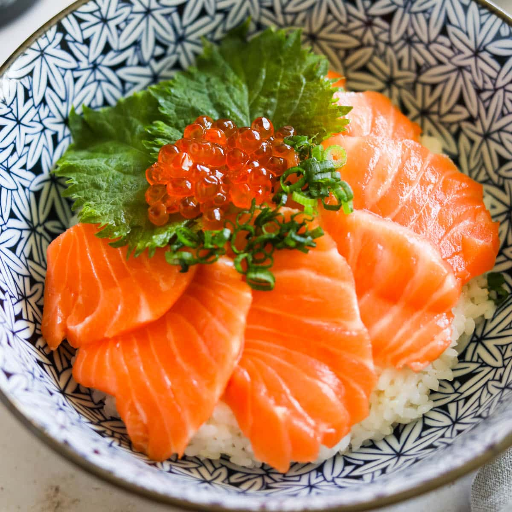

Salmon Sashimi Donburi

Description
A bowl of steamed rice, topped with pure luxury from the ocean, this Japanese rice bowl turns out to be one of the easiest dishes imaginable. Satisfy your sushi craving with this Salmon Sashimi Bowl! Steamed Japanese rice topped with
fresh sashimi-grade salmon, briny salmon roe (ikura), and crispy nori seaweed, this donburi bowl is light and super tasty. It’s also one of the quickest fancy dinners that you can put together.
Ingredients
- ▢2 servings cooked Japanese short-grain rice (typically 1⅔ cups (250 g) per donburi serving)
- ▢5 oz sashimi-grade salmon
- ▢3 Tbsp ikura (salmon roe)
for the Toppings (optional)
- ▢2 shiso leaves (perilla/ooba)
- ▢2 Tbsp shredded nori seaweed (kizami nori)
for Serving
Steps
- Divide 2 servings cooked Japanese short-grain rice into individual (large) donburi bowls and let it cool slightly. You do not want the hot rice to cook the sashimi.
- Then, layer the slices of salmon on the rice like flower petals until you cover half of the rice. Place one shiso leaf in each bowl to cover the other half of the rice.
- Divide 3 Tbsp ikura (salmon roe) and add on top of each leaf. Garnish the bowls with 2 Tbsp shredded nori seaweed (kizami nori).
- Serve soy sauce in a small dish and put wasabi on the side. Mix the sauce and drizzle on top of the Salmon Sashimi Bowl to enjoy!